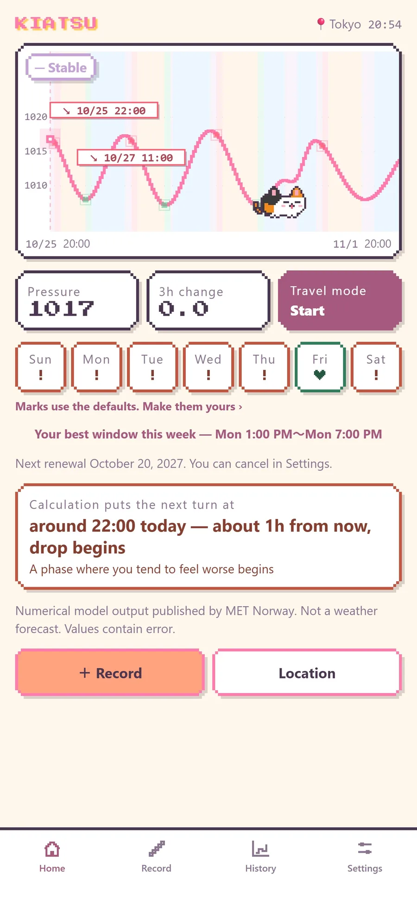
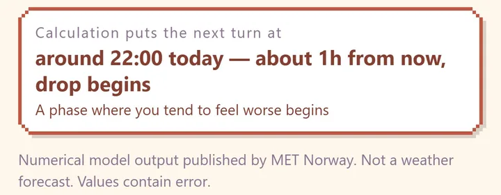
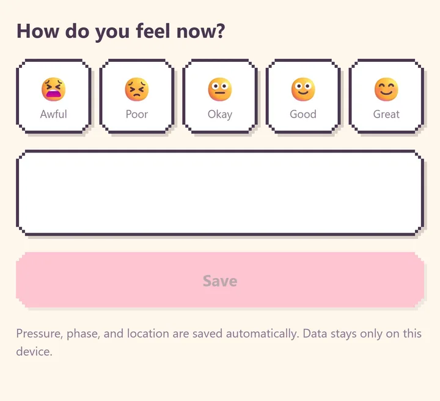
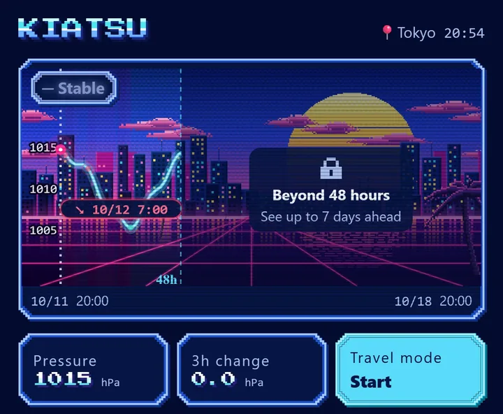

Air pressure changes can affect how you feel, but the phase that hits you differs from person to person. Some people feel it when pressure starts to fall, others at the lowest point, and others as it starts to rise again. KIATSU lines up the rise and fall of air pressure with your own symptom log, so you can find your own pattern.

Once you know your pattern, you can move plans away from the phases that tend to affect you, and put focused work into the hours that suit you. KIATSU helps you work with the pressure instead of being pushed around by it.
What you can do

The current phase and the next turn
See the current pressure phase (falling, rising, turning, stable) and the time until the next turn
Pressure graph for the next 48 hours, overlaid with your past records
Choose the phases that tend to affect you and get a notice 1, 3 or 6 hours before they start

Your log
Log how you feel and look back on your history

Skins
Choose a look, including pixel-art skins
Travel mode and placebo-free mode
Travel mode: record pressure changes while you travel, and separate changes caused by weather from changes caused by moving
Placebo-free mode: for 10 days, log how you feel without seeing any pressure data, then compare your log with the phases afterwards
Annual plan (7-day free trial)
Pressure graph and week strip up to 7 days ahead
A suggested window this week when you are likely to feel best, based on the pattern you chose
Export your records to share with your doctor
Records, notices and the 48-hour view stay free without a subscription. If you cancel during the trial, you will not be charged. The subscription renews automatically every year unless you cancel at least 24 hours before the renewal date.
No account needed
There is no sign-up and no login. Your records are stored only on your device. The developer runs no server, and your symptom records never leave your device. To fetch pressure values, the app sends the data provider a location rounded to about 1 km, plus the app name, version and a contact address (the provider's terms require apps to identify themselves). When you search for a city, the search text is sent too. No ads and no usage analytics.
Please note
This app is not intended to diagnose, treat or prevent any disease, and it does not replace advice from a doctor. If you are worried about your health, please consult a medical professional.
Pressure values are numerical model output published by MET Norway (the Norwegian Meteorological Institute). They are not a weather forecast, and this app does not make its own predictions. Values contain errors and may differ from measured pressure.